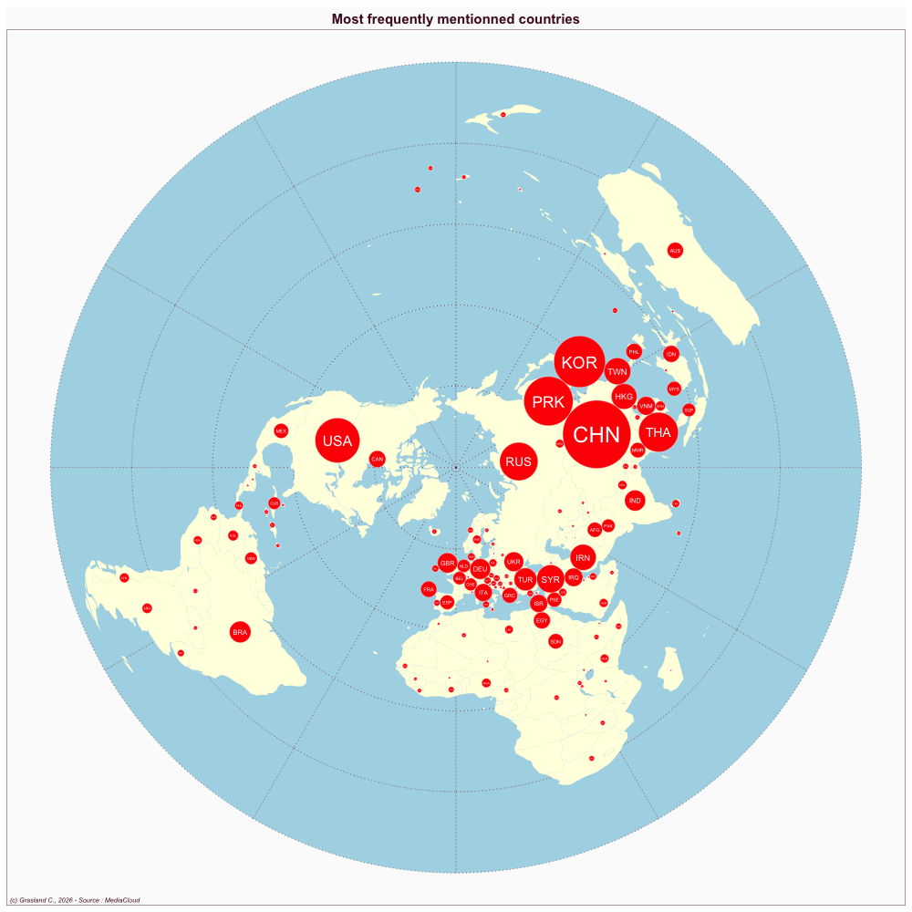
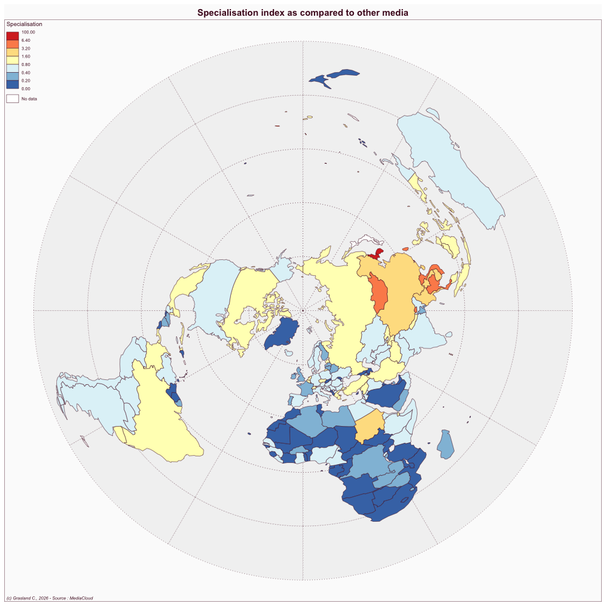

| Rank | Country | weighted news | % of news |
|---|---|---|---|
| 1 | CHN | 4679 | 15.9 |
| 2 | KOR | 2675 | 9.1 |
| 3 | PRK | 2446 | 8.3 |
| 4 | USA | 2022 | 6.9 |
| 5 | THA | 1579 | 5.4 |
| 6 | RUS | 1470 | 5.0 |
| 7 | SYR | 783 | 2.7 |
| 8 | TWN | 716 | 2.4 |
| 9 | IRN | 680 | 2.3 |
| 10 | HKG | 656 | 2.2 |
| 11 | TUR | 519 | 1.8 |
| 12 | BRA | 465 | 1.6 |
| 13 | IND | 436 | 1.5 |
| 14 | DEU | 426 | 1.4 |
| 15 | GBR | 409 | 1.4 |
| 16 | UKR | 385 | 1.3 |
| 17 | VNM | 348 | 1.2 |
| 18 | IRQ | 338 | 1.2 |
| 19 | ISR | 317 | 1.1 |
| 20 | ITA | 315 | 1.1 |
Asahi Shimbum
Japan
Website
- Link: https://www.asahi.com/
Publications
McNeill D. 2019. Japan’s contemporary media. In Critical Issues in Contemporary JapanRoutledge; 59–72.
SALIENCE ANALYSIS
Top countries
Dorling cartogram

Specialisation index

NETWORK ANALYSIS
Top dyads of countries
| Rank | Country1 | Country2 | weighted dyads | % of dyads |
|---|---|---|---|---|
| 1 | PRK | KOR | 181.1 | 10.9 |
| 2 | UKR | RUS | 85.8 | 5.2 |
| 3 | PRK | CHN | 84.1 | 5.1 |
| 4 | HKG | CHN | 78.3 | 4.7 |
| 5 | USA | CHN | 68.6 | 4.1 |
| 6 | USA | PRK | 68.6 | 4.1 |
| 7 | TWN | CHN | 68.3 | 4.1 |
| 8 | PSE | ISR | 54.9 | 3.3 |
| 9 | SYR | RUS | 44.7 | 2.7 |
| 10 | TUR | SYR | 33.4 | 2.0 |
| 11 | KOR | CHN | 32.1 | 1.9 |
| 12 | USA | IRN | 31.4 | 1.9 |
| 13 | VNM | CHN | 25.7 | 1.5 |
| 14 | RUS | PRK | 24.7 | 1.5 |
| 15 | TUR | RUS | 17.6 | 1.1 |
| 16 | USA | SYR | 15.3 | 0.9 |
| 16 | CHN | CAN | 15.3 | 0.9 |
| 18 | PRK | MYS | 14.5 | 0.9 |
| 19 | ISR | IRN | 13.6 | 0.8 |
| 20 | PHL | CHN | 12.9 | 0.8 |